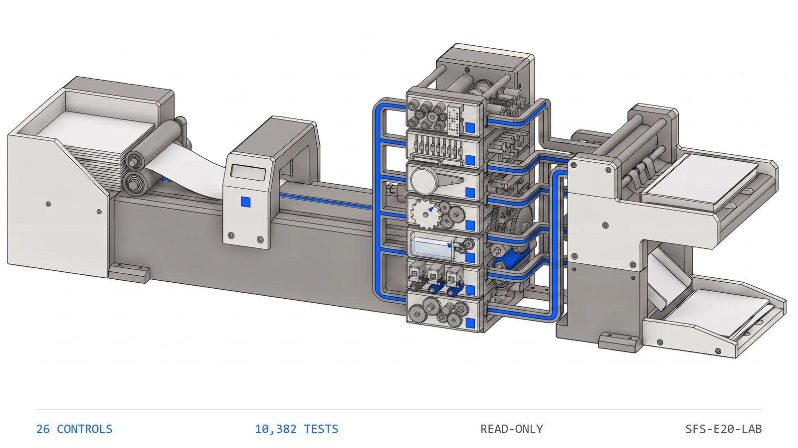

10,3821
Tests
the collected checks that pin this engine's behavior
ENGINE 20
SFS-E20-LAB · LABOR ALLOCATION · REV 2026-07-24 · PRODUCTION
PRODUCTION = runnable end-to-end, CI-backed, full test suite passing. All data fictional and seeded.
Charged only when authorized
An employee's time is not free to a project just because the company already pays the salary; the fully-burdened cost -- salary plus payroll taxes plus benefits -- has to be charged over, and only where a project manager authorized it in advance. Before a charge lands, the manager notifies the project accountant with a start date, a cost code, a budget confirmation, and the monthly charge -- a fixed amount or a percentage of the burdened cost. This engine reads the artifacts a monthly charge run emits -- the employee register, the project register, the authorizations, the charge ledger, the monthly invoices and the general-ledger positions -- and runs twenty-six deterministic controls over them. Does every monthly charge trace to a valid authorization, noticed in advance and on a real cost code with budget confirmed; does the amount re-derive from the authorization to the cent; is nothing charged before the authorized start; does cumulative project labor stay inside the budget parameter; and does each monthly invoice foot to its charges and tie the ledger. It re-derives every percentage charge with the same truncating-rate primitive that produced it, compares each figure with exact equality, and never writes to a source artifact.
The failures here do not look wrong in a monthly invoice run, which is exactly why they survive to the job that ends up underwater. A fixed amount was authorized and the ledger charges a different one, or a percentage charge drifts a cent from what the burdened cost resolves to -- the invoice still totals cleanly and the project simply carries the wrong number. A charge lands for a month before the authorized start, because the notice was late or the start slipped and the charge did not: the month is real, the amount is right, and the charge should not exist at all. A charge posts to a project or a cost code nobody named, and the money is on the wrong job. And the cumulative charge crosses the labor budget while every individual month looked ordinary. Footing into an invoice is necessary and not sufficient. The engine re-derives each charge where the authorization put it, ships a planted-defect file for every registered control, and states its benchmark as a command rather than a claim.
Eight control families run in registry order over each charge-run file. The first proves the others had something to read and that the review date is legible, because a control that passes on absent evidence reports assurance it never performed.
A contractor charges its own employees' labor to the projects they work on, and the cost is not free just because payroll already paid it -- the fully-burdened figure has to be charged over, and only where a project manager authorized it in advance. The manager notifies the project accountant ahead of time: a start date, a cost code, a confirmation the labor budget can carry it, and the monthly charge as a fixed amount or a percentage of the burdened cost. Four failures hide inside the monthly run, and none of them look wrong in a column of ordinary numbers. The charge outruns the authorization -- a fixed amount charged at a different figure, or a percentage a cent adrift of what the burden resolves to -- and the invoice still totals cleanly. The charge predates the authorized start, because the notice was late or the start slipped and the charge did not follow it; the month is real, the amount is right, and the charge should not exist at all. The charge lands on a project or a cost code nobody named, and the money is on the wrong job. And the cumulative charge crosses the project's labor budget while each individual month looked ordinary, so nobody notices until the job is underwater. None of these are judgment calls. They are equalities -- a charge against its re-derivation, a charge date against the authorized start, a pair against the authorizations on file, a cumulative total against the budget -- which a deterministic control settles better than a spreadsheet inherited by whoever holds it this year.
The seeded demo runs every control over every charge-run file7. The CLI generates 28 fictional charge-run files -- one clean baseline and one carrying each of the 27 planted defects -- then runs all 26 controls over each. The clean file returns PASS with no flags; every defect file returns REVIEW or FAIL and names the control it tripped along with the reason that control exists.
A charge foots into its invoice but is a cent adrift of the authorization8. A boundary test moves the monthly charge for one employee-project-period a single cent either side of the resolved figure. chg_amount_matches_auth fires on the cent above and the cent below and stays silent exactly at it -- a charge can foot perfectly into its invoice and still be a cent adrift of the authorization that permits it, and this is the control that catches it.
Nothing is charged before the authorized start9. The whole process exists so the accountant is told in advance, and two boundary tests bracket it: a start anywhere within a charged month still allows that month's charge, while a start the following month makes chg_not_before_start fire; separately, a notice dated the day after the authorized start makes auth_notice_before_start fire, because that is a charge authorized in arrears.
| Command | Operation | Output | Exit | Artifacts |
|---|---|---|---|---|
python run.py | regenerate the seeded fictional corpus, run all twenty-six controls, write both reports | per-file verdicts and every actionable finding, then the overall verdict | 2 for the bundled corpus, which carries a planted defect for every control by design | labor_report.json, labor_report.md, samples/ |
python -m labor_engine samples | analyze an existing folder of charge-run files without regenerating it | per-file verdicts and findings | 0 PASS / 1 REVIEW / 2 FAIL / 3 usage | none unless --json or --md is passed |
python -m labor_engine samples --generate --quiet | regenerate the corpus and print only the overall verdict | a single verdict line | 0 PASS / 1 REVIEW / 2 FAIL / 3 usage | samples/ |
python -m pytest | run the full test suite for this engine | 10382 passed | 0 when every test passes | none |
| Measure | Result |
|---|---|
| Engine tests10 | 10,382 tests collected live collection from the engine directory |
| Registered controls11 | 26 controls counted from the registry, not from documentation |
| Planted defects12 | 27 defect files every registered control has at least one file that trips it |
| Control coverage13 | 100 percent of controls with a planted defect no control ships without a file demonstrating it firing |
The engine has no write path and therefore no autonomy to gate. It produces findings; a person decides whether a labor charge posts to a project.
Deterministic envelope. seeded fictional inputs, read-only operation, offline default mode.
Demo gate. FAIL on the bundled corpus, by design -- it carries a planted defect for every registered control
| Severity | Verdict | Action |
|---|---|---|
| No findings above PASS | PASS | carry the mechanically clean charge run into the documented invoice and job-cost review |
| One or more FLAG, no FAIL | REVIEW | a human resolves each flag; a cumulative labor charge that has reached the project's warning band lands here before the next authorization is approved |
| One or more FAIL | FAIL | the charge does not post until the failing control is cleared -- an amount adrift of its authorization, a charge before the authorized start, a charge on an unauthorized project or cost code, an invoice that does not foot, a budget overrun, or a ledger that does not tie |

Distribution: public repository, MIT license.
One conversation: you describe the work that consumes your team's month; we tell you plainly what this engine can take over, what it can't, and what a scoped first phase would cost. Your people keep approval authority.
Book a free consultation